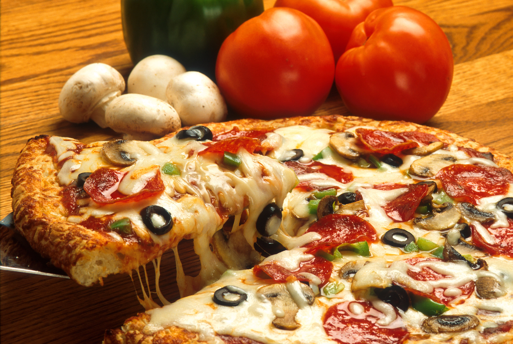

Pizza
Accueil

Description
Cette pizza aux champignons est spéciale car la cuisson au four fait ressortir
le meilleur des champignons : leurs bords en forme de pétales deviennent
légèrement croustillants, tandis que leur cœur, plus charnu, s'attendrit et gagne
en saveur. Empilés généreusement sur une pizza, même les carnivores ne regretteront
pas leur chair.
Ingrédients
- Une pâte à pizza
- Un pot de sauce tomate
- Quelques champignons
- Le fromage de votre choix
- Entre deux et cinq tranches de jambon
Étapes
- Préchauffez le four à 230 °C.
- Étalez la pâte.
- Recouvrez de sauce tomate.
- Disposez les tranches de jambon.
- Ajoutez les champignons découpés en cubes.
- Terminez avec le fromage.
- Enfin, faites cuire jusqu'à ce que ce soit cuit.